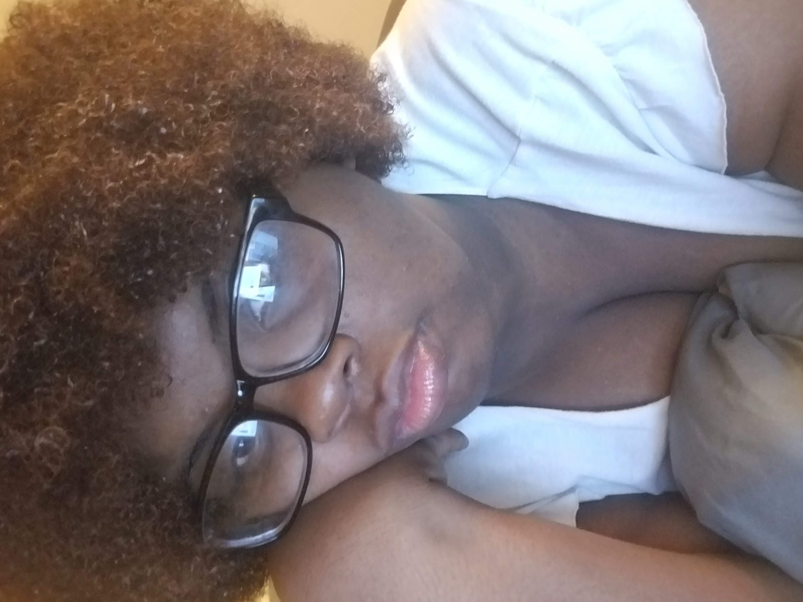
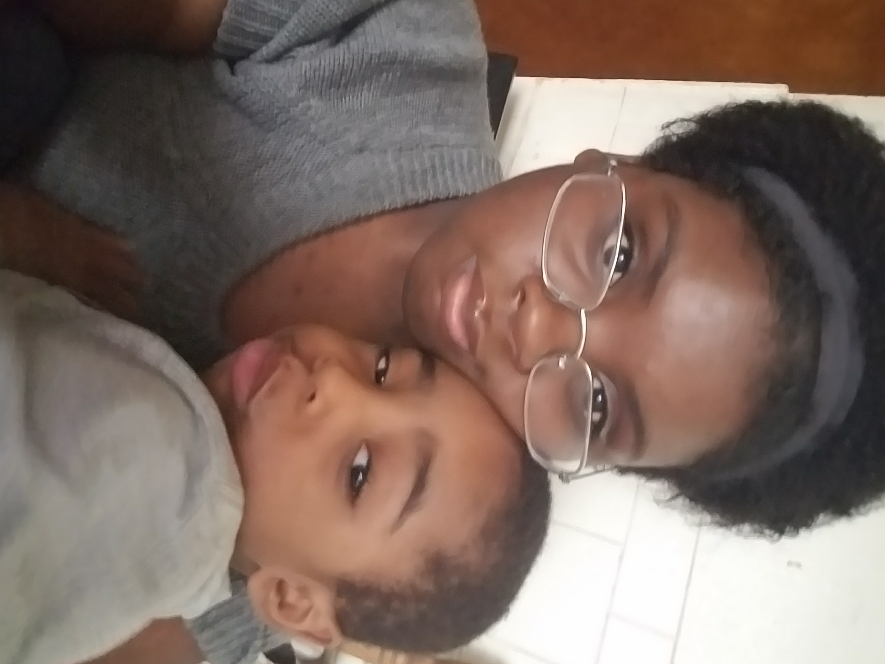

Yasmine Polk is a reclusive storyteller currently residing in Chicago, Illinois, who spends much of her time exploring any outlet of visual stories that so interest her. She mostly writes psychological thrillers but she also often dabbles in other genres such as drama, mystery and fantasy. When she is not stimulating her need for a good story, she is supporting her addiction to chamomile tea or obsessing over her baby brother.
 